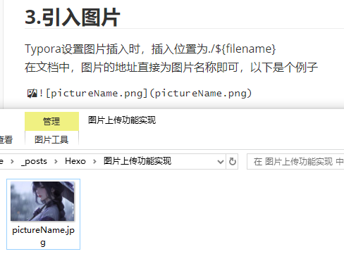
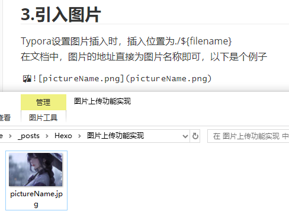

图片上传功能实现
图片上传功能实现
1.设置站点配置_config.yml
1 | post_asset_folder: true |
2.安装插件
1 | npm install hexo-asset-img --save |
3.引入图片
Typora设置图片插入时，插入位置为./${filename}
在文档中，图片的地址直接为图片名称即可，以下是个例子


本博客所有文章除特别声明外，均采用 CC BY-NC-SA 4.0 许可协议。转载请注明来源 Bai's Blog！
1 | post_asset_folder: true |
1 | npm install hexo-asset-img --save |
Typora设置图片插入时，插入位置为./${filename}
在文档中，图片的地址直接为图片名称即可，以下是个例子
